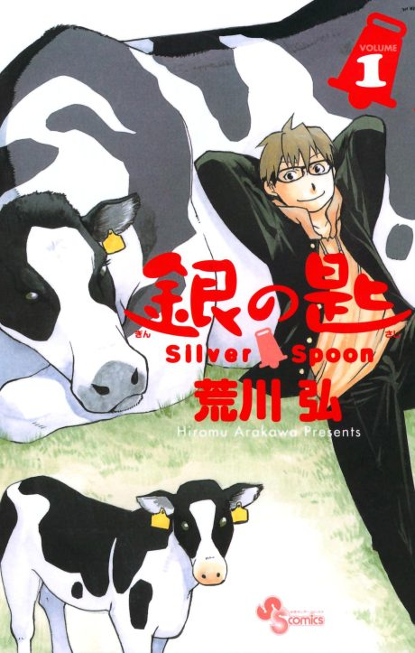

Manga continues fromCh. 76
Anime
Manga continues fromCh. 76
Anime
MangaSilver Spoon
銀の匙
AniList7.9
Animeter—
2 seasons22 ep
MangaCh. 76
Anime finished. Where does the manga pick up?
Start at Chapter76
Season 2 ends at chapter 75 (volume 9), so start at chapter 76. The manga is finished at 131 chapters.
175131 end
Season 2Start reading here